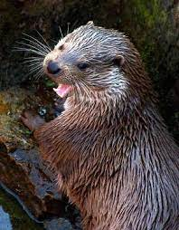

Como todos los mustélidos, tiene el cuerpo alargado, patas cortas, hocico chato y cráneo alargado.
Se caracteriza por su gran tamaño (el cuerpo mide entre 62 y 69 cm y la cola de 37 a 42 cm, y pesa unos 11 kg).
Tiene el pelaje pardo y corto, con una característica mancha blanca en la garganta y membranas entre los dedos de
las extremidades anteriores y posteriores. Se distingue de otros mustélidos acuáticos como el visón por su
corpulencia, pelaje más claro, y por nadar con el cuerpo sumergido y la cabeza afuera, mientras que el visón hace
emerger medio cuerpo al vadear. Se sumerge con movimientos rápidos, y bucea durante de 10 a 40 s.
Hábitat y distribución
Su hábitat preferido está situado en las orillas de los ríos bordeadas por bosques, vegetación espesa o paredes de
piedra.
Le gustan las aguas cristalinas con fondos pedregosos.
El territorio de los machos puede abarcar unos
15 km. de río, recorriéndolo cada 3 ó 4 noches.
El de la hembra es menor, ocupando unos 7 km. de río.
Dentro
de cada territorio no permiten cazar a ningún otro animal, ni siquiera a sus congéneres.
Utiliza una especie de toboganes, lustrosos y brillantes, para descender desde las pendientes altas y resbaladizas
que terminan en el río.
Su madriguera suele estar ubicada al borde del agua, aprovechando cuevas naturales,
madrigueras abandonadas, entre la maleza de las isletas de los ríos, etc.; disponen de una abertura para mantener
ventilada la guarida.
El suelo del nido suele estar compuesto por hierba seca, o bien con musgo y hojas.
En ellas se suelen encontrar deyecciones, y si hay crías dentro, tienen un olor desagradable y penetrante.
Costumbres y alimentación
Come crustáceos, peces, ranas, etc., y a menudo juega con sus presas durante un rato, cosa que le ha válido el
nombre de gato de agua en algunos sitios.
Al andar, como el resto de sus parientes, da saltos arqueando todo
el cuerpo para contrarrestar el efecto de sus cortas patas.
Se refugia en cuevas entre las rocas, entre raíces
o incluso en zarzales.
En algunos sitios hace toboganes trazados en el barro o la nieve para llegar rápidamente
al agua.

Protección y conservación

A partir de la década de los 80, esta especie experimentó una regresión muy acelerada del número de parejas, no sólo en la Comunidad Murciana,
sino en toda España, siendo, posiblemente, una de las rapaces más amenazadas de Europa.
Está considerada EN PELIGRO DE EXTINCIÓN.
Han sido especialmente graves en nuestra región los episodios de persecución directa mediante cepos, a veces instalados en el propio nido por
colombicultores, o trampas instaladas como medidas de gestión inadecuadas en algunos cotos de caza menor, además de la siembra de venenos, y
los disparos, a lo que se añade la desaparición de sus hábitats por urbanizaciones, creación de pistas forestales, choques con tendidos eléctricos,
molestias en zonas de cría, etc. Debe pues reducirse la mortalidad, y mejorar sus territorios de nidificación y alimentación, así como sus áreas de
dispersión, e invernada, entre las que se encuentra Murcia con una gran responsabilidad de conservación de la especie, si queremos seguir contemplando
el vuelo de esta inapreciada rapaz.
En la actualidad se está desarrollando un programa Life de conservación del águila-azor perdicera en nuestra región por parte de la Consejería de Medio
Ambiente, que contempla numerosas medidas, cuyos resultados son sin duda esperanzadores, y deben permitir la recuperación de esta especie hasta niveles
poblacionales anteriores a su declive.